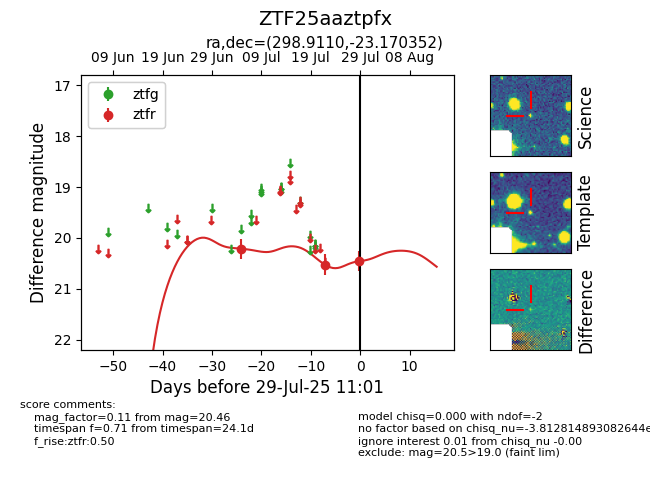

Target ZTF25aaztpfx at 2025-07-29 11:01, see:
FINK: fink-portal.org/ZTF25aaztpfx
Lasair: lasair-ztf.lsst.ac.uk/objects/ZTF25aaztpfx
ALeRCE: alerce.online/object/ZTF25aaztpfx
alt names
ZTF25aaztpfx (ztf,fink)
coordinates:
equatorial (ra, dec) = (298.9110,-23.17035)
galactic (l, b) = (18.0810,-23.93177)
photometry
last ztfr=20.46
3 ztfr detections
